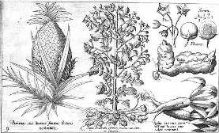

Así describía a los habitantes de América el navegante inglés Walter Raleigh: hombres que tienen la cabeza más baja que los hombros, otros de pies tan grandes que les sirven de quitasol, unos con tres hileras de dientes en cada maxilar, cuerpo de oso, patas de león y cola de escorpión.
Conrad Gesner, 1558
¿En cuáles de estos viajeros podemos creer?
Jorge Becco (Argentina), Historia real y fantástica del Nuevo Mundo, Biblioteca Ayacucho.